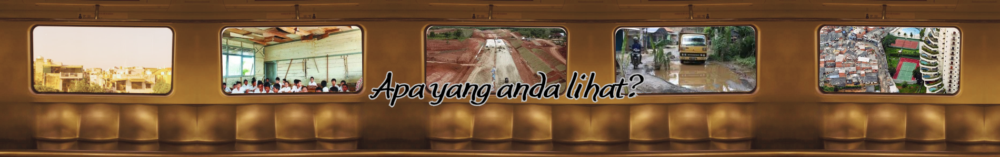
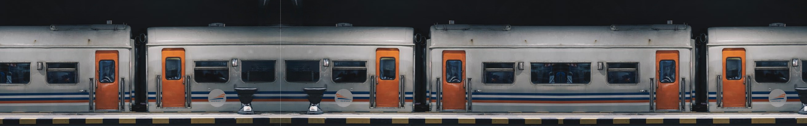
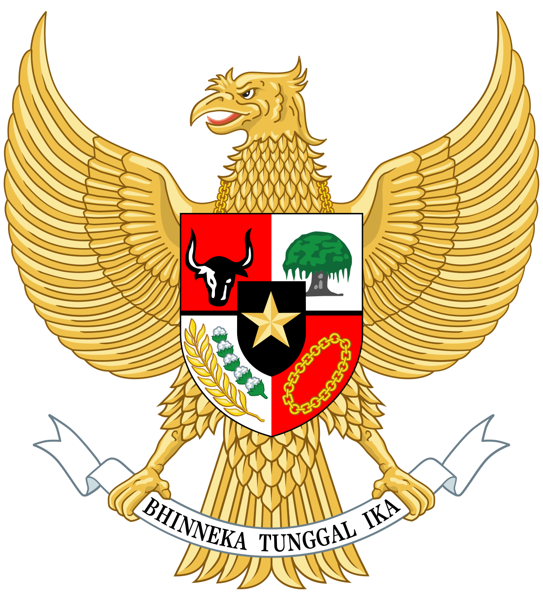
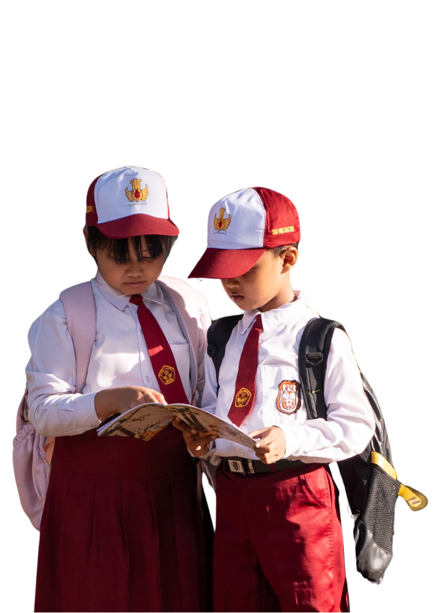
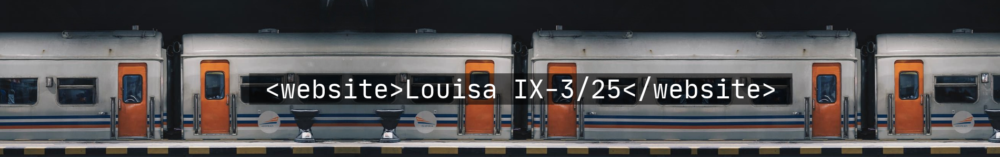

Mungkin anda bisa menemukan hal yang saya maksud. Saya ingin mengangkat kurangnya kemajuan teknologi dan infrastruktur di Indonesia. Bagaimana menurutmu? Setuju atau tidak?
Sekitar 60–70% industri modern terpusat di Jawa (terutama Jawa Barat, Jakarta, dan Jawa Timur). Sementara, wilayah seperti Kalimantan, Sulawesi, dan Nusa Tenggara tertinggal secara kemajuan industri. Hal ini mengakibatkan kesenjangan kontribusi ekonomi, urbanisasi dan migrasi dalam jumlah yang besar demi hidup yang lebih baik di Jawa, dan kesenjangan kualitas SDM di antara wilayah-wilayah.
Teknologi Indonesia kurang maju dan canggih dibanding negara yang lain. Hal ini menghambat pertumbuhan kami sebagai negara dan membawa dampak dan efek yang besar untuk berbagai pihak. Berbagai wilayah di Indonesia bahkan belum mendapat akses internet yang baik atau lengkap. Selain itu, Indonesia juga tidak memiliki banyak ahli dan spesialis mengenai teknologi sehingga inovasi terhambat.
Permasalahan yang pernah saya lihat adalah ketidakrataan pembagian pembangunan infrastruktur. Daerah yang terpencil atau kurang diperhatikan sering memiliki fasilitas yang kurang karena kurang diperhatikan pemerintah. Semua orang di Indonesia terkena dampaknya; kurangnya kemajuan teknologi di Indonesia sudah terlihat dan berdampak pada kehidupan kami sehari-hari dengan berbagai cara
Tentu, memerlukan bantuan negara lain!
Tapi, apa saja kerja sama antar negara yang bisa/sudah dilakukan Indonesia?
Kerja sama bilateral merupakan hubungan timbal balik, formal, atau perjanjian yang dijalankan oleh dua negara untuk mencapai sebuah keuntungan bersama.
Indonesia perlu bekerja sama dengan negara lain untuk mendukung SDGs 9 karena pembangunan fasilitas dan infrastruktur memerlukan dana besar, proses yang panjang, pengawasan yang baik, serta kecanggihan teknologi yang tinggi. Ada total 162 negara yang bekerja sama dengan Indonesia. Salah satu contoh seperti Jepang yang bekerja sama melalui kesepakatan Indonesia-Japan Economic Partnership Agreement (IJEPA), yang meliputi proyek infrastruktur seperti MRT, transisi energi, dan pendidikan. Banyak negara yang telah bekerja sama dengan Indonesia dan membantu Indonesia dalam sisi infrastruktur seperti Jepang, Singapura, dan Amerika Serikat. Negara-negara ini bantu memberi pendidikan dan edukasi kepada Indonesia mengenai infrastruktur demi kemajuan infrastruktur Indonesia.

Kerja sama regional adalah kerja sama antara beberapa negara yang berada dalam satu kawasan atau wilayah geografis yang berdekatan.
Beberapa contoh dari kerja sama regional merupakan ASEAN, APEC, dan Uni Eropa; Indonesia merupakan anggota ASEAN. Kawasan atau organisasi regional yang berkaitan dengan SDGs pilihan saya adalah ASEAN. ASEAN membantu bangun infrastruktur yang tangguh dalam Indonesia, mempromosikan industrialisasi yang inklusif dan berkelanjutan, serta mendorong inovasi dan memberi pertolongan pada Indonesia. Sebailknya, Indonesia menjadi mediator konflik dalam berbagai isu di ASEAN seperti isu Kamboja-Thailand, Laut Tiongkok Selatan, dll. Kerja sama ini selalu mendukung SDGs pilihan saya yaitu infrastruktur. Beberapa program yang telah ASEAN lakukan seperti ASCN, EV, RPC, MEA, dan AFTA/RCEP ikut berkontribusi dan membantu dalam pembangunan berkelanjutan dan pencapaian SDGs 9.
Kerja sama multilateral adalah bentuk hubungan atau proses kolaborasi yang melibatkan tiga negara atau lebih (bisa dalam satu kawasan atau lintas kawasan) untuk mencapai tujuan bersama yang saling menguntungkan.
Jenis kerja sama ini merupakan cara Indonesia dan puluhan negara lain bisa ikut terlibat dalam program SDGs. Melalui kerja sama multilateral ini, negara-negara saling melengkapi, saling membantu, dan saling mendengarkan satu sama lain demi mencapai tujuan dan konklusi yang adil, sama, dan bersifat berkelanjutan. SDGs atau Sustainable Development Goals dibuat oleh UN (United Nations)/PBB (Perserikatan Bangsa-Bangsa). Bagi semua negara, hal ini juga mendorong stabilitas kolektif global dan mendukung pembangunan serta daya saing nasional Indonesia. Salah satu contoh konkrit adalah negara-negara membantu satu sama lain adalah saat Indonesia membantu menyediakan dan mengirim ribuan personel militer dan kepolisian untuk menjaga perdamaian di wilayah di berbagai konflik.
Pancasila dapat menjadi pedoman Indonesia dalam melakukan segala hal karena Pancasila menjadi pedoman, landasan ideologi, dan dasar dalam moral kami sebagai warga negara Indonesia. Setiap manusia harus memiliki moral yang tetap dan objektif; dengan itu, masyarakat akan menjadi lebih tertib dan setiap individu akan tahu apa yang salah dan benar. Hal yang sama berlaku dalam mewujudkan SDGs. Dengan adanya Pancasila, kami memiliki unsur kemanusiaan (sila kedua dan ketiga) dan hal tersebut sangat membantu kami dalam mewujudkan SDGs lewat menghargai perbedaan, empati, kerja keras, dan lain-lain. Sila keempat dan kelima juga bantu mewujudkan SDGs lewat kerja sama, pembahasan yang adil, dan keinginan untuk mewujudkan masyarakat yang adil. Hal-hal ini tidak hanya bisa dilakukan saat bekerja sama dengan negara lain, namun juga dalam kehidupan sehari-hari.
Kemanusiaan yang Adil dan Beradab
Dengan adanya kemanusiaan, kami mendapatkan rasa empati dan peduli kepada yang memerlukan bantuan kita. Dengan rasa empati tersebut, kami mampu memperjuangkan keadilan dan kemakmuran semua pihak. Penyelesaian perbedaan tersebut bisa dilakukan dengan komunikasi dan musyawarah yang adil, di mana semua perspektif dan pendapat didengarkan dan diperhatikan. Dengan pembahasan ini, diharapkan semua pihak berkontribusi dan berpartisipasi secara aktif dalam penyampaian pendapat dan penyampaian perspektif, serta memperlakukan satu sama lain secara adil dalam pembahasan tanpa memandang perbedaan.
Persatuan Indonesia
Kreja sama pasti mengandung persatuan. Negara-negara dan semua pihak memerlukan kebersamaan dan persatuan yang kuat yang hanya bisa dicapai melalui toleransi satu sama lain, menghargai satu sama lain dan membantu satu sama lain. Persatuan ini merupakan alat yang sangat penting untuk mencapai kesepakatan-kesepakatan yang baik untuk semua pihak dan semua negara. Dengan bersatu, mereka dapat membantu dan melengkapi satu sama lain dalam mencapai tujuan bersama yang akan berdampak secara positif bagi semua pihak yang terlibat.
Kerakyatan yang Dipimpin oleh Hikmat Kebijaksanaan dan Permusyawarahan Perwakilan
Kerja sama pastinya mengandung musyawarah, pengumutan suara, dan pendengaran pendapat. Sila keempat mendorong dan mengingatkan kami untuk menghargai dan mendengarkan pendapat satu sama lain walaupun mereka berbeda dari kita. Sila keempat juga mengajarkan kita untuk menyelesaikan masalah dengan musyawarah dan pembahasan yang adil, merata, dan semuanya didengarkan.
Keadilan Sosial Bagi Seluruh Rakyat Indonesia
Mengutamakan kemajuan industri dan infrastruktur, terutama pada negara-negara yang tertinggal. Sila kelima mendorong keadilan; dan SDGs ini menekankan pemerataan pembangunan infrastruktur dan pemanfaatan inovasi teknologi bagi seluruh masyarakat, bukan hanya satu pihak. Nilai-nilai yang terkandung dalam sila tersebut adalah keadilan sosial yang bisa kami lihat melalui pemerataan pembangunan infrastruktur, memberi bantuan inovasi teknologi pada negara-negara yang sedang berkembang, dan bantu dalam pengembangan industri supaya semua negara (tidak hanya negara maju) bisa mendapatkan oportunitas dan kemampuan yang sama untuk berkembang.

Penerapan nilai kemanusiaan dalam kerja sama tersebut jelas-jelas terlihat. Negara-negara maju peduli pada negara-negara yang ingin berkembang dan sering membantu mereka. Bantuan ini tidak hanya datang pada satu arah; namun dua arah, di mana kedua negara saling membantu dan melengkapi satu sama lain. Inisiatif negara maju untuk membantu negara berkembang merupakan contoh dan penerapan nilai kemanusiaan yang bagus dan jelas.
Dengan adanya Pancasila, kami diberikan landasan dan struktur moral mengenai nilai-nilai kemanusiaan, termasuk toleransi pada satu sama lain. Kami sering diajak untuk toleransi pada satu sama lain di tengah perbedaan agama, pendapat, budaya, dan lain-lain. Menghargai perbedaan dan menjaga persatuan antarnegara dapat dicapai dengan adanya toleransi, kontribusi antarnegara yang maksimal dan sesuai dengan harapan, hubungan timbal balik (simbiosis mutualisme) dan pembagian yang adil dan merata.
Musyawarah dan kesepakatan sangat penting dalam kerja sama. Dengan adanya musyawarah, adanya komunikasi. Dengan adanya komunikasi, antarnegara bisa menyampaikan pendapat secara adil dan teratur. Komunikasi memastikan semua perspektif dilihat dan disampaikan, dan akhirnya dipertimbangkan dalam penentuan pilihan. Selain itu, komunikasi juga menyamakan pemahaman. Setiap negara kemungkinan memiliki pemahaman suatu konsep yang berbeda. Dengan membahas, mereka bisa mencapai satu pemahaman. Komunikasi juga bisa mencegah konflik, mendorong keterlibatan secara aktif, dan menghasilkan keputusan yang jauh lebih matang. Kesepakatan juga merupakan hal yang penting dilakukan. Kesepakatan memberi arah yang jelas, menumbuhkan rasa tanggung jawab, menjaga keadilan dan memperkuat solidaritas.
Selain itu, keadilan merupakan hal yang sangat penting juga karena tidak mementingkan satu pihak daripada yang lain dengan alasan sepele. Keadilan dapat diwujudkan melalui kesetaraan derajat, transparansi dan integritas, serta mengutamakan kepentingan bersama. Hal-hal ini dapat diimplementasikan melalui kesetaraan kedaulatan, pembangunan berkelanjutan, pembagian manfaat yang sesuai, pembagian tugas yang adil dan sesuai dengan kemampuan masing negara, serta saling melengkapi dan saling membantu.
Saya ingin menerapkan nilai keempat Pancasila dan mengutamakan pendengaran dan menghormati pendapat orang lain, pembahasan, dan pemilihan keputusan yang logis dan baik untuk semua orang. Sebagai tindakan nyata, saya akan mendengarkan pendapat orang lain dalam kerja kelompok, selalu berusaha untuk mengerti perspektif dan pendapat orang lain, memperlakukan semua pendapat secara adil, dan inisiatif memberi ide serta berpartisipasi secara aktif dalam pembahasan. Saya bisa menerapkan sila ini di mana pun saya berada karena kerja sama tidak hanya terbatas oleh sekolah, rumah, maupun masyarakat. Saya memilih sila ini karena dengan kerja sama dan kebersamaan, kami dapat bersatu dan melakukan lebih banyak hal dibanding sendirian. SDGs 9 (industri, infrastruktur, inovasi) merupakan hal yang besar; dan hal yang besar hanya bisa dicapai dengan kerja sama. Penghormatan terhadap satu sama lain dan pembahasan yang baik membantu supaya kerja sama berjalan dengan lebih lancar.

